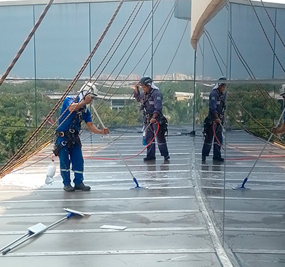

Na Oliveira Alpinismo, aplicamos técnicas avançadas de alpinismo industrial para fornecer serviços de manutenção e pintura predial. Nossa equipe especializada assegura a aplicação de pinturas e tratamentos que protegem e revitalizam fachadas, promovendo não apenas estética aprimorada, mas também conservação a longo prazo das estruturas.

Técnicas de Acesso por Corda
Utilizamos técnicas modernas de acesso por corda para alcançar todas as áreas de um edifício sem a necessidade de andaimes, reduzindo o impacto nas operações diárias e oferecendo um serviço mais rápido e econômico.
Durabilidade e Proteção
Nossos serviços de pintura incluem a aplicação de revestimentos de alta qualidade que protegem as fachadas contra danos ambientais, corrosão e desgaste, garantindo durabilidade e reduzindo a necessidade de manutenções frequentes.
Estética e Valorização Imobiliária
Uma fachada bem mantida e recém-pintada não só melhora a aparência do edifício, mas também contribui para a valorização do imóvel, atraindo mais inquilinos e visitantes.
Perguntas Frequentes
Selecionamos tintas com base na exposição do edifício a elementos naturais, requisitos estéticos e normas ambientais, garantindo produtos de alta qualidade que oferecem cobertura superior e longevidade.
A frequência pode variar conforme a localização e as condições climáticas, mas geralmente recomendamos uma avaliação e possível retoque a cada cinco anos para garantir a conservação e a estética do edifício.
Sim, todos os nossos serviços de pintura predial vêm com uma garantia que cobre qualquer defeito de material ou aplicação, assegurando a satisfação total de nossos clientes.